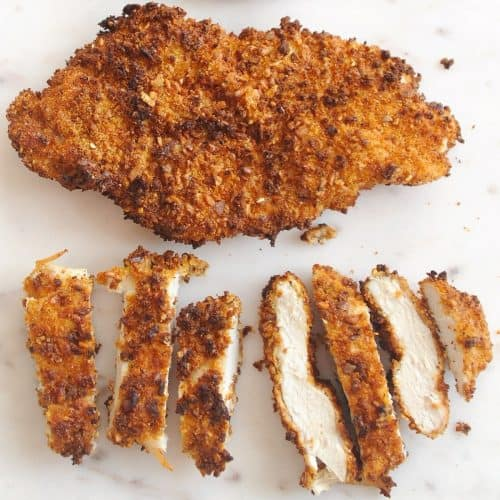

Odin's Recipes
Breaded Chicken Cutlets

Description
Cooking your chicken cutlets like this will spice up your cooking life like no other. Especially paired with rice, spaghetti, or even some tortas(sandwiches)!
For hispanics this is a renowned way of cooking our chicken and just talking about it is making me drool! Let's start!
Ingredients
- chicken breast
- 2 large eggs (scrambled)
- bread crumbs of your choice
- oil
Steps
- First, we are going to drop some seasoning into a bowl just enough to cover half of the bowl, and we are going to crack the eggs and scramble them and store them in a different bowl.
- Next, we are going to wash our chicken and start cutting our chicken breast into medium slices so they can cook faster.
- When you are finished with that begin to pour some oil into your frying pan, make sure it covers just about half of your frying pan. Set your pan to high heat.
- While your pan is heating up, begin to dip your chicken into the egg and fully dip it in the bowl and then into the bread crumb bowl.
- Finally, start to put your chicken cutlets into the oil, and let them fry until you see a golden brown color, use your tongs to take them out and put them in paper towls, so they can remove excess oil.
- Pair the chicken up with some rice or food of your choice and enjoy!!! (bonus tip: squeeze some lemon lime on them and it will give the chicken more flavor ;) )